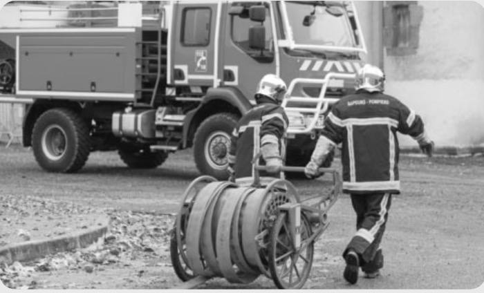

Situation — Mehdi au fournil

Mehdi est apprenti boulanger. Il travaille près du four, manipule de la farine, porte des charges et utilise du matériel coupant. Il tousse parfois après le fleurage du plan de travail.
Cours standard adapté : mêmes objectifs que le programme CAP, textes courts, questions guidées, indices, corrigés, explications concrètes et audio sur les blocs.
Lire dans l’ordre. Chaque document est suivi de ses questions. Les images aident à comprendre, mais le texte suffit pour répondre.
Utiliser les aides. Ouvrir l’indice pour démarrer, le corrigé pour vérifier, puis l’explication pour comprendre avec un exemple concret.
Traiter l’information : repérer une information utile dans un document.
Analyser une situation : comprendre le problème, les personnes concernées et les causes possibles.
Mettre en relation : faire le lien entre une information du document et une connaissance du cours.

Mehdi est apprenti boulanger. Il travaille près du four, manipule de la farine, porte des charges et utilise du matériel coupant. Il tousse parfois après le fleurage du plan de travail.
1. À partir de la situation,
1.1C2Relever trois dangers dans la situation.
Chercher ce qui peut blesser ou abîmer la santé.
Chaleur du four, farine en suspension, charges, matériel coupant.
Exemple : la farine en suspension peut être inhalée et irriter les voies respiratoires.
1.2C3Associer un danger à un dommage possible.
Relier la source au dommage sur le corps.
Exemple : chaleur du four → brûlure ; farine → irritation ou asthme ; charge → douleur au dos.
Exemple : dire “farine” seul ne suffit pas ; il faut expliquer ce qu’elle peut provoquer.
Un risque spécifique est un risque particulièrement présent dans un secteur ou un métier. Il ne concerne pas tous les métiers de la même façon.
En boulangerie, les risques peuvent être liés aux poussières de farine, à la chaleur, aux coupures, aux brûlures et aux manutentions.
2. À partir du document 1,
2.1C1Définir un risque spécifique.
Chercher ce qui est “particulièrement présent” dans un métier.
C’est un risque très présent dans un secteur ou un métier donné.
Exemple : le risque de poussière de farine est plus spécifique à la boulangerie qu’à un bureau administratif.
2.2C1Citer deux risques spécifiques de la boulangerie.
Reprendre deux exemples du document.
Poussières de farine, chaleur, coupures, brûlures, manutentions.
Exemple : une brûlure au four est liée à l’activité concrète du fournil.
Analyser une situation : comprendre le problème, les personnes concernées et les causes possibles.
Mettre en relation : faire le lien entre une information du document et une connaissance du cours.
Un dommage apparaît souvent selon une chaîne : une situation dangereuse expose une personne à un danger ; un événement déclencheur se produit ; la personne subit un dommage.
Analyser cette chaîne aide à trouver où agir pour éviter le dommage.
1. À partir du document 2,
1.1C3Remettre la chaîne d’apparition d’un dommage dans l’ordre.
Partir de l’exposition puis aller vers la conséquence sur la santé.
Situation dangereuse → événement déclencheur → dommage.
Exemple : travailler près du four sans protection → toucher une plaque chaude → brûlure.
1.2C2Analyser le cas de Mehdi avec cette chaîne.
Choisir un seul risque pour construire la chaîne.
Exemple : farine en suspension → Mehdi la respire régulièrement → irritation ou asthme.
Exemple : la chaîne permet de comprendre où prévenir : limiter la poussière ou protéger les voies respiratoires.
L’exposition aux poussières de farine peut provoquer une rhinite, une toux, une irritation des yeux ou un asthme professionnel. Les douleurs du dos peuvent être liées aux charges et aux postures.
Les effets peuvent être immédiats ou apparaître progressivement.
2. À partir du document 3,
2.1C1Classer les effets selon leur apparition.
| Immédiat possible | Progressif possible |
|---|---|
Immédiat arrive vite ; progressif apparaît avec le temps.
Immédiat : brûlure, coupure, toux. Progressif : asthme professionnel, douleurs chroniques du dos.
Exemple : une coupure est visible tout de suite ; une douleur du dos peut s’installer après des gestes répétés.
2.2C5Argumenter pourquoi il faut agir avant les premiers signes graves.
Penser aux maladies qui s’installent progressivement.
Il faut agir tôt car certains dommages apparaissent avec le temps et peuvent devenir durables.
Exemple : une toux répétée au travail peut annoncer une irritation qui doit être prise en compte.
Mettre en relation : faire le lien entre une information du document et une connaissance du cours.
Proposer une solution : choisir une action adaptée à une situation.
Argumenter : donner une idée et l’appuyer avec une raison.
Pour limiter les poussières de farine, on peut utiliser une farine moins pulvérulente, verser doucement, capter les poussières, nettoyer par aspiration adaptée et éviter le balayage à sec.
Pour les brûlures et manutentions, on peut organiser le poste, utiliser des aides, former aux gestes et porter les protections nécessaires.
1. À partir du document 4,
1.1C3Classer les mesures proposées.
| Poussières de farine | Brûlures | Manutentions |
|---|---|---|
Associer chaque mesure au risque qu’elle réduit.
Poussières : capter, aspirer, éviter balayage à sec. Brûlures : gants, organisation. Manutentions : aides, formation gestes/postures.
Exemple : un aspirateur adapté retire la poussière sans la remettre en suspension.
1.2C4Proposer un plan de prévention en deux actions.
Choisir une action qui protège plusieurs personnes puis une protection personnelle.
Collective : capter/aspirer les poussières. Individuelle : porter une protection adaptée si nécessaire.
Exemple : une aspiration efficace réduit la poussière pour toute l’équipe ; le masque complète si l’exposition reste présente.